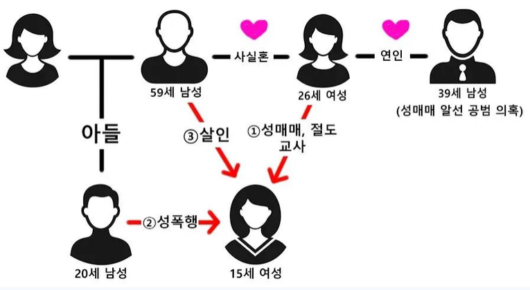

https://bbs.ruliweb.com/best/board/300143/read/77360598
26세 여자가 중학생 꼬여서 성매매 강요
26세 여자의 사실혼 관계인
59세남성의 아들(20)이 피해자 성폭행
피해자가 고소- 현재 조사중
그와중에 아들(20)은 일명
각목치기 하다가 걸림 + 다른 절도죄로 감옥행
26세 여자에 대한 성매매 강요죄 조사가 오자
59세 남자가 피해자 찾아가 살해
피해자가 있던 에어비앤비도 26세 여자가 예약해줌
26세여자는 39세의 애인이 또 있었음

소설좀 써보자면 진짜 공적인 여성쉼터로 옮기기 이전 26세 여성이 마련한 공간에서 지내다가
26세 여성이 마련한 공간에서 공적 여성쉼터로 이동 중 26세 여성의 사실혼관계인 59세 남성에게 변을 당한 것으로 보임
이게 계획적인지 아닌지 모르겠지만 일단 뉴스에선 그러더라고